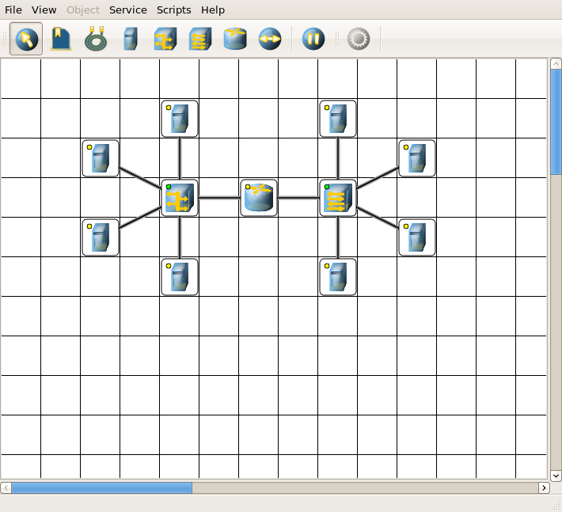
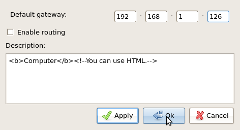
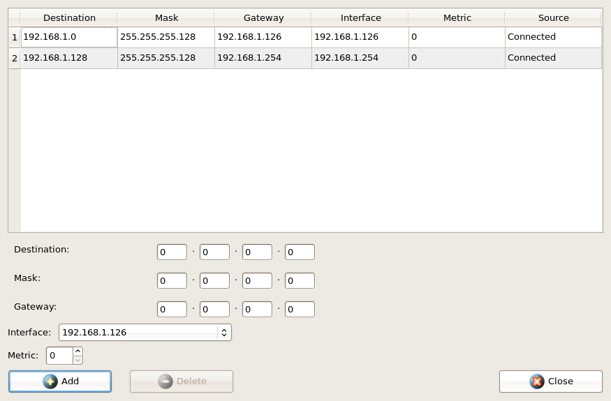
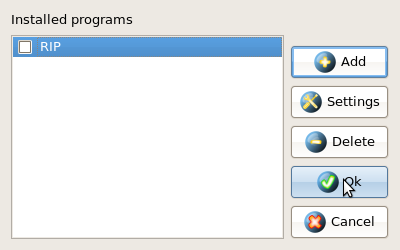

| Manual NetEmul | ||
|---|---|---|
| Prev. | Next | |
In the previous section we have constructed a simple network. Here we will a little improve it to show you as much as possible
possibilities and customisations.
Let's go.
To begin with, we will complete a network. All devices will be involved in our finite network. Here our network:

Perhaps, we will start that we will divide our network into 2 subnets. We will accept, we have a pool of addresses of a network of a class C.
We will divide it into 2 parts: 192.168.1.0-192.168.1.127 and 192.168.1.128-192.168.1.255 with a mask 255.255.255.128.
Authors hope that you can independently assign ip-addresses to all sites. It not the manual to computer networks, therefore here will be
considered only that directly concerns the program.
For customisation of ip-address of the interface we open a window "Interfaces" (already mentioned by us above).
We expose ip-addresses and subnet masks in appropriate strings of each interface. After pressing button "Ок" or to "Apply", we can observe,
how the indicator has changed colour with yellow on green and from our device to which have now given the address, the Arp-report frame has run.
Whether it needs to be revealed is not present in our network of repetition of addresses. If All of you таки something not so have made also
addresses have coincided, there will be an informative message after which you should resolve independently this situation for correct
operation of a network.
After we have placed all ip-addresses to finite sites, we already have basically working subnets.
But only everyone works autonomously and transmit messages from one such subnet in another we cannot. Accordingly, on it we will not stop.
Further we will give addresses to each interface of a router. It to make not difficultly, as operations similar that you did at
customisation of computers. But nevertheless, we again can transmit nothing until on finite sites gateway servers by default will not be
installed.

In a subnet more to the left of a router all sites should have a gateway server 192.168.1.126, more to the right - 192.168.1.254.
In a figure above there is a field "Description" in which you can to name the computer or to make any description which will emerge further
in the hint at mouse prompting on the device. It is convenient to give names in this field since at opening of log for the device the header
will contain this description. Other devices too have "a Property" window, but their contents differ a little. We recommend them to study.
We have set gateway servers and now for us completely a working network. But we will test its working capacity in following section,
and here we will consider some more properties of objects.
Now we will consider superficially various items in the menu "Object", giving you a starting point for independent and more careful studying as possibilities of the program, and principles of operation of each device. Certainly in following section some items will be in more details disassembled, but nevertheless authors hold such opinion: anything so does not accelerate learning process, as independent research of an interesting material.
We Will start from the commutator.
Let's open its table of switching. Now it absolutely empty since there was no data transfer. But thus we have a possibility to add static
record, for this purpose is necessary to fill all fields with the appropriate data and to press button "Add".
We Will pass to a router.
In the shortcut menu us items interest: the routing Table, the Arp-table, Programs.
The Arp-table too is empty (for the same reason, as the switching table), but in it also it is possible to add static records.
Very important item - the routing table. Already now we see in it 2 records.

These records correspond to our subnet about what speak inscriptions in a column the Source. As a source there can be RIP protocol,
to install which it is possible by means of the Program item. In a column the Gateway server is brought the address of a following router
or our address if such is not present. In a column the Interface a port address from which we will send data. In this table too it is possible
to bring static records, and their priority will be above, than for all other records, and in a column the Source will appear an inscription
Static.
The Program window looks like this:

Accordingly you can install, customize, delete programs. It is necessary to tell that only those programs which can be necessary for network operation here are included.
It was the short browse of possibilities. Further the most interesting...
| Prev. | Main | Next |
| Network customisation | On level above | Sending of packages |